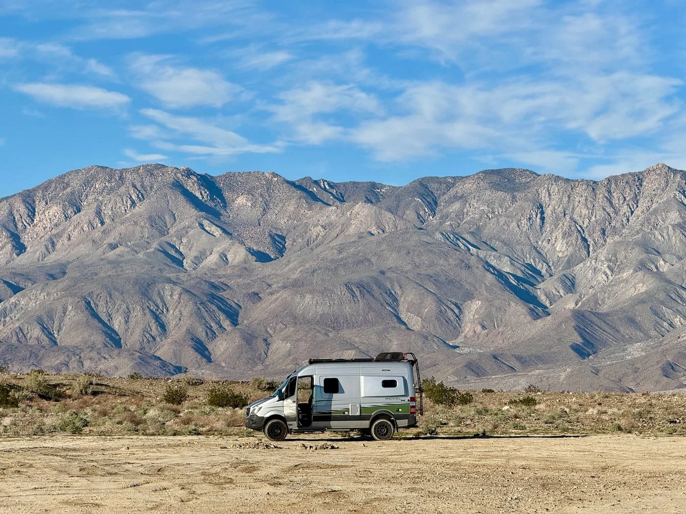

Field Note / 06
California Expedition
- Vehicle
- PourHouse sprinter van
- When
- Winter 2025
- Distance
- 14,000 miles
- Duration
- 22 weeks
PourHouse becomes a full-time travel rig.
We traveled west for Thanksgiving, lived along the California coast, wandered east through the desert, and proved PourHouse as our full-time platform.
Read the complete Field Note